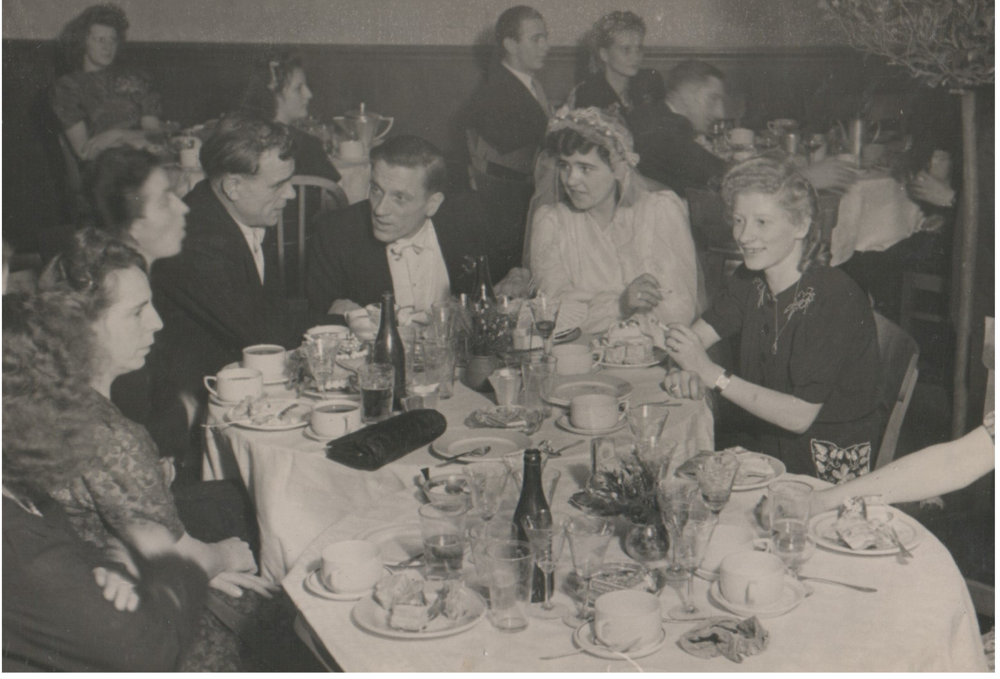
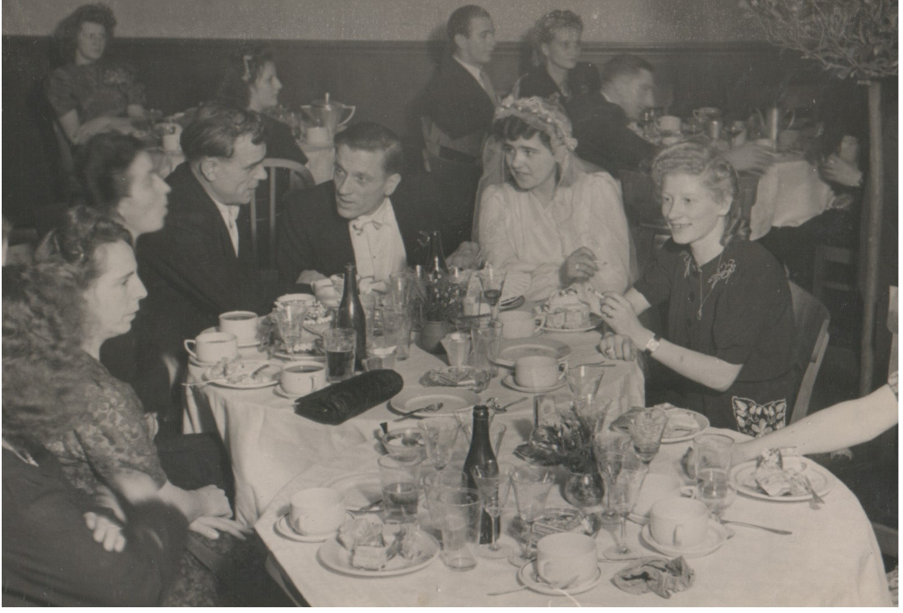
Thomas Godsalve was born in Bethnal Green in 1918, and worked on the railways for a while after leaving school at 14. Apparently he was turning into quite the east-end tough guy, and was quite a hard case. Looking at these later photos, I can believe it!
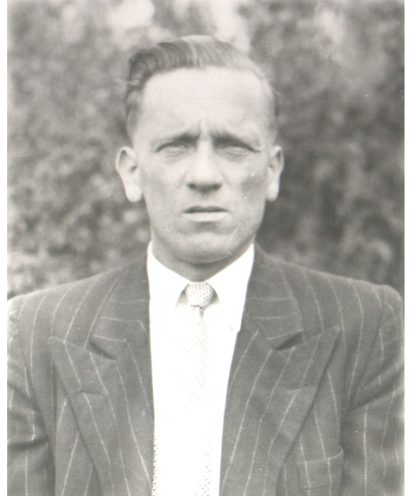 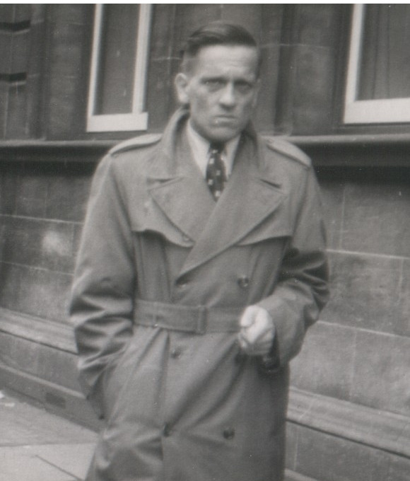
Life changed forever for him when he volunteered for the army in 1939. He served with the Royal Berkshire Regiment of the British Army for more than twenty five years, from India, to Burma, to Germany, to Cyprus, to Eritrea, and even for the last bit, in Scotland and England. In Eritrea he decided he got fed up with being shot at and transferred to the Catering Corps. His cooking was so good that nobody shot at him ever again. And Staff Sgt. Godsalve's first law of cooking is ``When they're brown they're done, when they're black they're b@!*&!ed."
He met my mother Lieselotte Whilhelmina Kosrien, (born on the eighth of July 1925 in the Ruhrgebiet) when he was stationed in Germany. My Dad instantly took to the people of the Ruhr, and he and ``Lolly" (Mum's family nickname) were soon engaged and then married. You can get a sense of my Dad's relationship with the family in these two engagement celebration photos below. In the photo on the left, Dad is in the back row, third from the left. Just to his front left is ``Onkle Heinz", my Mum's brother, and to Heinz's left and taking centre stage is ``Opa Fritz" - Mum's father Fritz Kosrien. In the photo on the right, the happy couple take centre stage at the front. One of Mum's sisters, Hanalora (or Tante Lora to me) is just behind Mum to the left. Heinz, and his young wife ``Pippi" are in the back row on the far left. I am not sure who is on my Dad's right hand side, but my Mum's Mum is immediately above him in the photo.
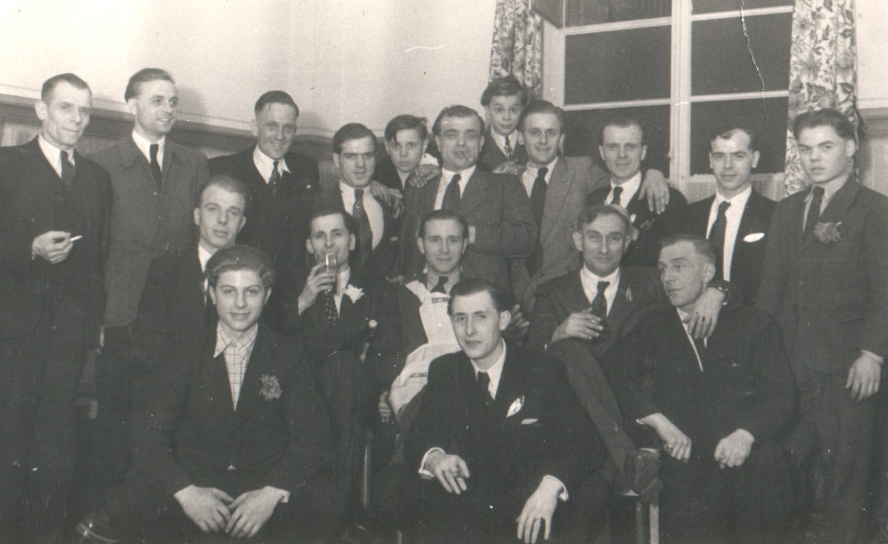 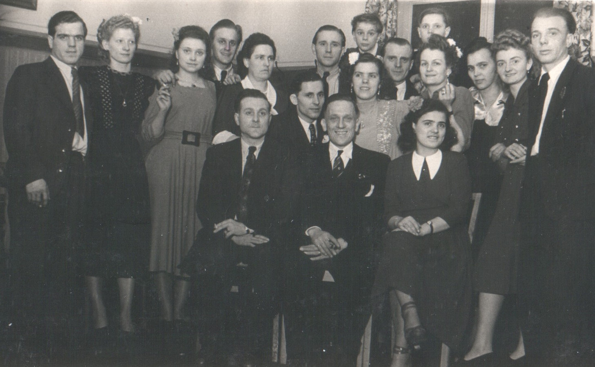
Mum and Dad, with Mum's parents are in the left hand photo. In the photo on the right, the reception seems to be winding down: Heinz and Pippi are on either side of Mum and Dad.
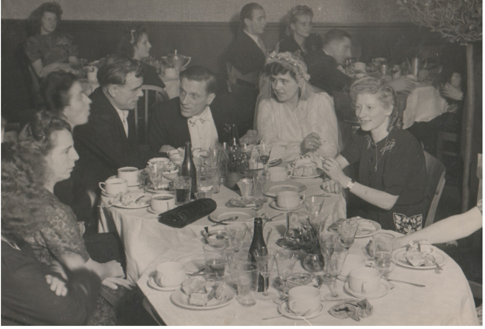
The army was Dad's family as far as he was concerned, because of bad relations, he broke off all contact with his family in London until hearing a Salvation Army SOS message on the radio - his father was dying. I sometimes met his half brother ``Jimmy" and brother ``Uncle Ronnie", but contact remained scarce. Dad was in the Army for more than twenty seven years. Army life was absolute hell after the war, as you can see below.
Here Mum and Dad are forced to endure a diabolical army Christmas dinner...
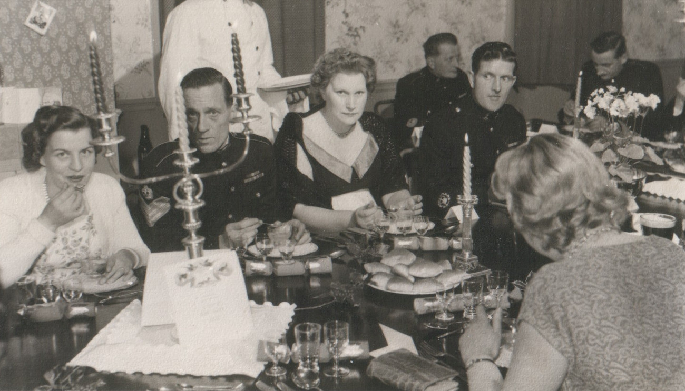 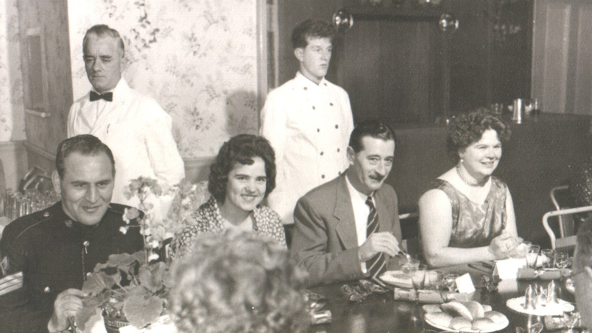
Here are just a few examples of the harsh conditions that were stoically endured...
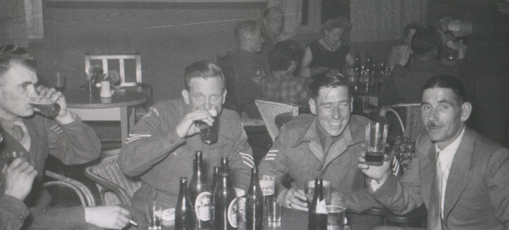 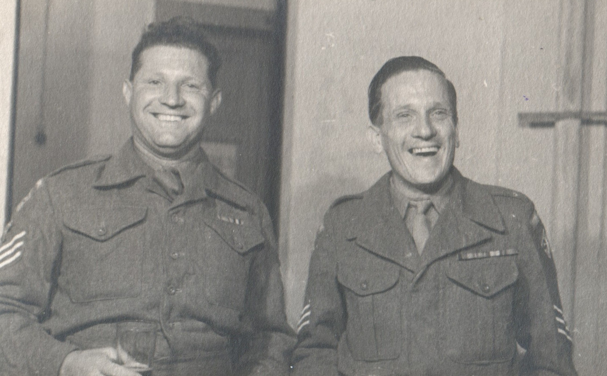 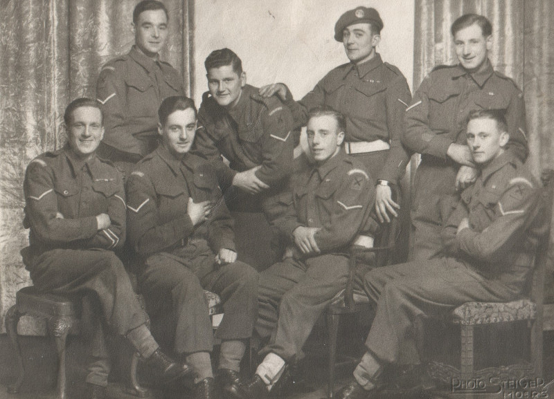 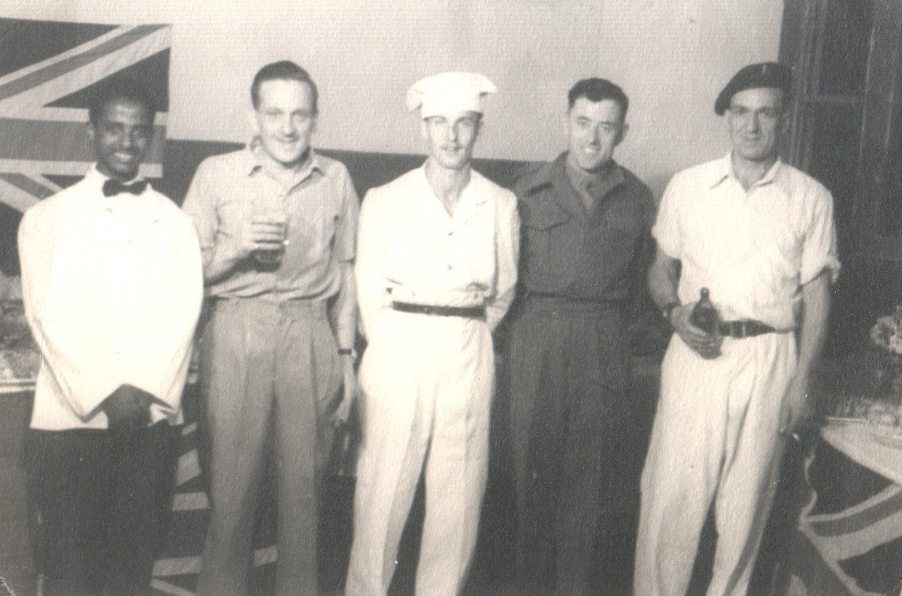
Here are my Dad's Medals. They are, the 1939-1945 star, The Burma Star, The Defence Medal, The 1939-1945 Medal, and a Long Service and Good Conduct Medal of the Regular Army.
As Dad was not an officer, he couldn't stay in the army without accepting demotion from staff sergeant and cuts in pay. So army life came to an end. Mum and Dad struggled, Dad started working at Sutton's Seeds (as chef), but later changed jobs to be a security guard at Gillette's. They had adopted me (I was about five years old when we left Arborfield camp) and gradually saved up, so - after a stint in a tiny caravan -then an attic flat - then the top of a Maisonette - they took out a mortgage and moved to a nice terraced house in Southcote. Life may have been more dull than it was in the army, but there was always the feeling that things were always improving. Men walked on the moon, we had a car, and later a phone, and a colour TV.
Dad was devastated by a stroke in 1971, but by 1976 he had recovered enough to start looking for work, and it was looking possible that he might even get a job. (He was declared ``fit for light work" in 1971 when he clearly wasn't fit for anything - ring any bells anyone?) My Mum had a low paid part time job, and so we were awarded 50p per week social security benefits which was reduced to zero after a month. All this weighed very heavily on Dad. During this time the newspapers were full of headline stories about ``scroungers" living like kings on benefits and work-shy people living on ``the sick" - (any more bells ringing?). The difference between reality and what was peddled as reality in the scumbag press made a sharp and everlasting impression me. At least we had the candle light to cheer us up during the Miner's strike...
We were shocked rigid when Dad was diagnosed with cancer, and he died four weeks later in the April of 1977.
Complete rewrite and expansion July 2013, hope to add more at some point. Back Home